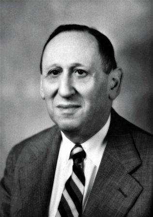

Аутизм: психоаналитический подход
Содержание:
1. Что такое аутизм
2. Симптомы, признаки аутизма у детей
3. Эпидемиология аутизма
4. История возникновения диагноза
5. Дифференциальная диагностика
6. Причины аутизма
7. Современные методы лечения аутизма
8. Лечение аутизма психоанализом
9. Психологическая помощь родителям
1. Что такое аутизм
Ранний детский аутизм или РДА – это нарушение психического развития, наиболее отчетливо проявляющееся в отгороженности от внешнего мира, нарушении развития речи, особенно ее коммуникативной функции, наличии стереотипий. Нередко аутизм сопряжен с нарушениями в развитии интеллектуальной сферы.
2. Симптомы, признаки аутизма у детей
Признаки аутизм у детей проявляются с самого рождения. Но в ряде случаев родители отмечали резкий регресс в развитии, утрату после определенного возраста ранее приобретенных навыков.
Результат, который может принести лечение аутизма, во многом зависит от раннего начала терапии. Поэтому родителям нужно знать признаки аутизма.
Аутизм имеет следующие симптомы:
-
к 12 месяцам ребенок не начал лепетать;
В норме к 6 месяцам у детей появляется лепет.
-
к 12 месяцам он не машет на прощание рукой, не указывает на предметы.
К этому возрасту в норме ребенок способен указывать на предмет или еду, до которых не может дотянуться. Или показать предмет по просьбе взрослого, когда тот, например, просит: «покажи яблоко». Также малыш показывает пальцем на что-то ему интересное. Ребенок пытается копировать, то, что делает взрослый: перенимает махание рукой на прощание, хлопает в ладоши на манер игры в «ладушки-ладушки», издает смешные звуки.
-
к 16 месяцам ребенок не произносит ни одного слова;
-
к 24 месяцам ребенок не произносит фраз из двух слов. Имеются в виду спонтанные фразы, а не автоматические ни к кому не обращенные повторения только-что услышанного, называемые эхолалиями;
-
утрата речевых или социальных навыков в любом возрасте;
-
ребенок не смотрит в глаза, отводит глаза при общении;
-
ребенок невыносим, например, постоянно, громко, пронзительно, монотонно кричит. При этом малыша невозможно утешить и невозможно обнаружить физических причин такого состояния.
-
не откликается на имя, не отвечает на обращенную к нему речь, ведет себя как будто глухой;
-
агрессия, направленная на себя. Вырывает себе волосы, бьется головой об пол, кусает собственные руки;
-
использует руку взрослого как средство достать себе что-либо, при этом не просит помочь и никак не обращается к взрослому;
-
завороженность каким-либо зрелищем, навязчивый просмотр определенного момента в фильме, отрешенное разглядывание яркого света и т.д.;
-
стереотипии, аутостимуляции. Например, перебирает перед глазами пальцами (добавить видео), похлопывает себя руками или предметами по определенным участкам тела, вертит предметы в руках, непрерывно кружится. Монотонно повторяет одни и те же звуки или движения, раскачивается из стороны в сторону;
-
очень стойкие пристрастия, например, употребление в пищу только одного продукта, ребенок требует одевать только определенную вещь и не принимает новой одежды. Не выносит нового, например, появление нового предмета мебели или изменение в обстановке может вызвать истерику;
-
ходит на цыпочках, плохая координация, но в определенный момент демонстрирует удивительную ловкость;
-
раздевается, снимает обувь, как будто не выносит ощущений от одежды, но при этом отсутствует ожидаемая реакция на дискомфорт, холод, боль;
-
все тянет в рот, жует и облизывает, повышенное слюноотделение;
-
стереотипии вместо игры: ребенок навязчиво строит ряды из предметов, игрушек, без какой-либо сюжетной или ролевой линии.
3. Эпидемиология аутизма
Сегодня аутизм у детей является весьма острой проблемой. Число диагностированных случаев во всем мире растет с каждым годом. Распространенность на 2012 год составила 62 случая на 10000 человек. Мужская часть подвержена заболеванию в 4 раза чаще, чем женская.
Мировое ученое сообщество пытается выявить причины аутизма, а исследователи в области психического здоровья пытаются найти способы бороться с этим недугом.
4. История возникновения диагноза
Термина «аутизм» был введен в 1911 году Эйгеном Блейлером.
Э́йген Бле́йлер (1857-1939) швейцарский психиатр, на определенном этапе работавший с Зигмундом Фрейдом и разделявший идеи психоанализа, известен исследованиями психических расстройств, помимо термина «аутизм» ввел термин «шизофрения».
Аутизм Блейлер определял как состояние при шизофрении, характеризующееся отрывом от действительности, фиксацией на внутренних переживаниях, уходом в себя, отгороженностью от внешнего мира и потерей эмоционального контакта с окружающими.
Понятие «аутизм» Блейлер развил из термина, введенного Фрейдом «аутоэротизм», характеризующийся фиксацией собственных инстинктивных побуждений на себе, в противовес направлению агрессивных и любовных влечений на объекты внешнего мира.

Позже, в 1943 году, австрийский и американский психиатр Лео Каннер (1894-1981) описал состояние 11 детей в возрасте до пяти лет, которые не воспринимали окружающих, не реагировали на обращённую к ним речь, избегали зрительного контакта, совершали одни те же стереотипные действия, например, крутились на носках, ходили из стороны в сторону на цыпочках, похлопывали себя ладонью или любыми предметами, издавали одинаковые звуки, у таких детей речь могла вовсе отсутствовать либо была лишена коммуникативного значения. В силу коммуникативной изоляции умственное развитие таких детей практически не происходило.
Описанные признаки, составившие синдром Каннера и сегодня отчетливо узнаются у детей, страдающих этой наиболее тяжелой формой аутизма.
Примерно в то же время, в 1944 году, независимо от Канера австрийский педиатр и психиатр Ганс Аспергер (1906-1980) описал детей, чье речевое развитие происходило очень рано, до того, как ребенок начинал ходить, однако, в последствии их речь отличалась необычной интонацией, интенсивным словотворчеством, наблюдались также: избегание зрительного контакта, бедность мимики и жестов, моторная неловкость, угловатые движения, дисгармоничность, проявляющаяся, например, в избирательной ловкости в определённых ситуациях наряду с ее отсутствием в других.
Игры и увлечения у таких детей часто носят однообразный, ригидный и навязчивый характер. Однако стереотипная монотонная увлеченность может приводить к большим познаниями в определенной области. Но зачастую ригидный характер этих познаний не дает использовать их должным образа. Например, монотонное заучивание чьих-то биографий ограничивается исключительно целью запомнить факты. Или фотографическое запоминание дней в календаре, названий планет т.д.
Состояния, названные Аспергером аутистической психопатией , являются более благоприятными с точки зрения социальной адаптации, нежели состояния, описанные Канером. Люди с синдромом Аспергера испытывают сложности в социальной адаптации, но при определенных условиях могут добиться больших успехов. Примером тому служит талантливый слепой пианист, страдающий аутизмом, Дерек Паравичини.
Из художественных фильмов, где представлен образ людей с синдромом Аспергера можно отметить работу 2009 года режиссера Макса Майера «Адам», а также фильм 2007 года «Бен Икс» режиссера Ника Бальтазара.
Сегодня принято говорить о расстройствах аутистического спектра, на противоположных концах которого находятся тяжелые формы аутизма и аутистические черты. Последние при определенных обстоятельствах могут и вовсе не замечаться окружающими.
В нашей стране существует ряд современных выдающихся специалистов, чьи исследования психологии аутизма получили признания во всем мире.
К ним относится Ольга Сергеевна Никольская , автор и соавтор ряда работ по проблеме аутизма и его коррекции, предложившая классификацию типов аутизма, в основе которой лежит способность детей к социализации, обучению и открытость для контакта. Классификация включает четыре типа аутизма, первый из которых характеризуется наиболее грубыми расстройствами, с полным отсутствием контакта, речи и слабым психическим тонусом, тогда как четвертый тип характеризуется сложностью в общении. Промежуточные типы отличаются наличием стереотипий и отстраненностью от внешнего мира. Исследования Никольской и ее коллег помогают в диагностике, понимание и коррекции аутистических состояний.
DSM-5 – руководство по диагностике и статистике психических расстройств принятое в США – начиная с пятого пересмотра, опубликованного в 2013 году перестало содержать «синдром Аспергера» как диагноз и теперь также рассматриваются уровни тяжести расстройств при аутизме. В DSM-5 представлено 3 уровня, ранжирующихся по степени возможной социальной адаптации, потребности в поддержке и негибкости поведения.
5. Дифференциальная диагностика
Необходима дифференциальная диагностика аутизма от схожих по ряду симптомов расстройств, например, от умственной отсталости. Хотя интеллектуальный дефект совсем не редкость при расстройствах аутистического спектра, он имеет ряд отличий, что влечет необходимость использовать свой подход при коррекции различных патологических состояний. При умственной отсталости нет целенаправленного избегания контакта и ухода в себя, как при аутизме.
Алалия – нарушение развития речи при сохранном слухе и интеллекте. Отгороженность от внешнего мира, сходные с аутизмом реакции, отставание в интеллектуальном развитии могут быть связанны с тем, что у ребенка не происходит речевого развития, но отсутствует целенаправленное избегание внешнего мира, как при аутизме.
Сходную с аутизмом симптоматику имеет ряд генетических заболеваний, таких как синдром Ретта, синдром Дауна, синдром Мартина-Белла.
Нарушения слуха могут быть приняты за аутистическую отрешенность и, наоборот, ребенок с аутизмом создает впечатление, что он ничего не слышит.
Из современной международной классификации болезней МКБ-10 был исключен диагноз «детская шизофрения», вместо него ставится диагноз «ранний детский аутизм». Многие специалисты оспаривают такое смешение, так как шизофрения имеет ряд специфических признаков, такие как бред и галлюцинации, которые свойственны психотическим состояниям.
6. Причины аутизма
До сих пор ведутся исследования по выявлению факторов, вызывающих развитие аутизма.
Современная отечественная патопсихологическая традиция относит аутизм к вариантам аномального развития. К аномальному относятся все варианты развития, отклоняющиеся от нормы.
Таким образом, аутизм рассматривается как развитие, с самого начала протекающее искаженно. Такой взгляд соотносится с теориями о врожденных основах аутизма.
И действительно, многие современные исследователи отмечают отклонения в поведении детей уже на самых ранних стадиях. Например, отсутствие свойственного возрасту комплекса оживления при приближении взрослого. Так здоровый ребенок 3-6 месяцев активно реагирует на приближении матери, когда она берет его на руки, он подстраивается под ее объятия. Ребенок с аутистическими чертами может не реагировать на приближение матери, отворачиваться от нее, противится тому, чтобы его брали на руки. Либо наоборот, дети с аутистическими чертами могут быть чрезмерно податливыми, слишком спокойными, ласковыми. Родители, особенно если это их первый опыт, могут только радоваться, сравнивая поведение своего малыша, не доставляющего хлопот, с беспокойным поведением детей, о котором рассказывают знакомые.
Гуление, которое в норме возникают к 3-6 месяцам, а лепет к 6-12 месяцам, у такого ребенка могут появляться гораздо позже или отсутствовать. После чего могут появляться эхолалии, то есть стойкие повторения звуков, которые не носят коммуникативного характера.
По последним данным ответственность генов за развитие аутизма измеряется от 60 до 90%. Такой разброс данных может говорить о различной вовлеченности генов в каждом конкретном случае. К тому же, пока не удалось выявить конкретный ген, ответственный за развитие аутизма. Сейчас рассматривают вклад констелляции генов кандидатов, но на данном этапе развития исследований говорить о более-менее определенных генах не представляется возможным.
Современные исследования Стэндфордского университета, привели к выводам, что ряд тяжелых заболеваний, в том числе аутизм, являются результатом совпадения многих факторов, ответственных за обмен веществ в организме. Определенный генетический профиль создает уязвимость к различного рода факторам. Если эти факторы достаточно интенсивно воздействуют на организм на ранних стадиях развития, то это может привести к нарушению развития, проявляющегося в виде того или иного заболевания. Исследователи считают, что правильнее говорить о расстройствах аутистического спектра, так как возможно существует множество отклонений психического развития, проявляющихся в виде нарушения контакта с внешним миром. Исследователи Стэндфордского университета предположили, что в будущем будет создано более детальное описание симптомов, свойственных тому или иному расстройству аутистического спектра. Также отмечается возможность в будущем создавать модели генетической предрасположенности к возникновению аутизма, благодаря чему станет возможным прогнозировать развитие этого заболевания.
Отмечают следующие факторы, способные влиять на развитие расстройств аутистического спектра:
- мутация в родительском репродуктивном материале семени и яйцеклетке;
- патологические влияния на развитие плода, такие как: инфекции, токсические поражения, отягощенное протекание беременности, дефицит определенных веществ, необходимых для развития;
- физические травмы в перинатальный и ранний постнатальный период;
- психогенные факторы, такие как нарушения детско-родительских отношений, переживания сильного эмоционального потрясения ребенком или его родителями;
- нарушение обменных процессов в организме, дисбаланс в гормональной сфере и в работе вегетативной нервной системы, сложности в усвоении определенных веществ, содержащихся в ряде продуктов;
- нарушения в функционировании нейронов и передачи нервного импульса в корковых и подкорковых структурах головного мозга. Отмечались отклонения на электроэнцефалограмме мозга;
- некоторыми родителями отмечался регресс в развитии ребенка после определенных прививок.
Нужно сказать, что неврологическое и психическое развитие находятся в сложных взаимоотношениях. Дисфункция на уровне нервной системы влияет на психическое развитие, но и особенности среды, например, ее стимульная насыщенность также определяют развитие определенных структур мозга. Обучение и тренировка приводят к преобразованию и развитию практически всего организма, включая отдельные органы, психические функции, структуры головного мозга, функционирование нейронных сетей и даже, как утверждают исследователи Стэндфордского университета, в результате тренировок могут преобразовываться участки ДНК.
7. Современные методы лечения аутизма
В связи со сказанным выше отметим, что на сегодняшний день основные методы терапии аутизма основаны на психотерапии, психокоррекции, поведенческой терапии, на занятиях с логопедом и со специалистами, использующих обучение и воспитание, то есть это психологическая работа с ребенком и его семьей, где медикаментозные и другие виды лечения могут быть факультативными и применяются при необходимости в рамках комплексного подхода.
Далее мы обсуди существующие методы лечения аутизма и место, которое занимает в их ряду психоанализ.
Занятия с логопедом
Отсутствие коммуникативной речи включены в основную триаду нарушений при аутизме. При этом бывает, что ребенок способен повторять или четко выговаривать случайно услышанные фразы. Поэтому необходимы занятия с логопедом для развития коммуникативной функции речи.
Логопедические занятия с детьми аутистами требуют особого подхода, поэтому стоит искать логопеда, специализирующегося на данной работе.
Лечебная физическая культура
Физкультура, адаптированная для занятий с детьми с РДА, способствует выработки у них навыков самоконтроля, координации и позволяет направить физическую энергию в конструктивное русло.
Медикаментозное лечение
Не существует современных медикаментов для лечения непосредственно аутизма. Психофармакологические препараты могут назначаться врачом-психиатром для снятия определенных тяжелых симптомов при аутизме, таких как постоянная неуправляемая гиперреактивность, интенсивная неконтролируемая агрессия или аутоагрессия, возбудимость. Иногда действие нейролептиков помогает устранить симптомы, мешающие обучению, такие как дефицит внимания и гиперреактивность. Применение ноотропов, иногда может способствовать обучению. Если были выявлены определенные обменные дисфункции, врач может назначить прием витаминов или других препаратов. В любом случае, медикаментозная терапия является в большинстве случаев вспомогательной при коррекции аутизма.
Психофармакология может нести опасность для состояния ребенка. Дело в том, что прием препаратов, назначаемых при психических расстройствах часто приводит к появлению побочных симптомов. Люди, находящиеся на таком лечение, нередко бросают его именно из-за тяжелой переносимости некоторых препаратов. Слабость, тревога, тахикардия, плохая концентрация внимания, потеря или усиление аппетита, ведущие к потере или набору веса, непроизвольные движения ног, сухость во рту, вот некоторые из возможных проявлений. Задача психиатра как раз и заключается в подборе схемы лечения, которая бы минимизировала побочные действия. Но ребенок с аутизмом часто не способен донести информацию о своих ощущениях. Родители и специалисты могут догадываться о его состоянии только по косвенным признакам. А меньшая активность ребенка не всегда свидетельствует о благотворном влиянии используемого препарата.
Мы уделили этому вопросу такое внимание, потому, что это серьезная проблема. Гиперактивные дети с психическими расстройствами, особенно когда они начинают расти, а растут они в большинстве случаев физически крепкими, могут доставлять родителям много хлопот. И на этом фоне может возникать привыкание родителей к использованию седативных средств для ребенка. Одним из основных симптомов у детей, находящихся на психофармокотерапии являются гормональные нарушения, которые приводят к потере или набору веса. Но правильно назначенное лечение может дать положительный результат. Вот почему, если необходима фармокотерапия при аутизме, желательно обращаться к детскому врачу-психиатру, специализирующемуся именно на этом заболевании.
Диеты
В случаях, если выявляется глютеновая непереносимость, когда клейковина, содержащаяся в злаковых продуктах, может вызывать повреждение тонкой кишки и даже аллергические и аутоиммунные реакции, то прописывается безглютеновая диета. Существовало мнение, что при аутизме также существует непереносимость клейковины, однако данные ряда исследований не подтверждают эффективность безглютеновой диеты в терапии аутизма.
Музыкальная терапия
Существуют специалисты, занимающиеся музыкальной терапией при аутизме. Особенность этого подхода состоит в том, что терапевт ненавязчиво знакомит ребенка с музыкальными инструментами. Вначале ребенок может получать удовольствие от извлечения монотонных звуков, но со временем занятия начинают приобретать более организованный характер. Музыкальность детей-аутиствов хорошо известна. Игра на инструментах при этом недуге способствует развитию самоорганизации и самовыражению.
Примером знаменитых музыкантов с аутизмом могут служить Дерек Паравичинии и Мэтт Савадж.
Рисование, лепка, вырезание, занятия на развитие мелкой моторики
Весьма полезны любые творческие занятия, вовлекающие тонкую моторику, такие как: рисование, лепка, вырезание, складывание кубиков.
Весьма часто при аутизме наблюдаются стереотипные манипуляции с сыпучими материалами и водой. Обычно эти действия носят неорганизованный и навязчивый характер. Очень хорошо, если родитель или специалист, работающий с ребенком смогут превратить такие манипуляции в игру. В качестве сыпучих материалов можно использовать крупы, шарики, песок или ёмкости с водой. Даже обычное присутствие рядом, спокойный разговор с ребенком на отвлеченные темы или придумывание историй о том, что происходит во время манипуляции с водой или крупой, при этом тактичное удерживание ребенка от того, чтобы он все разбрасывал или разливал может дать внушительный положительный эффект.
Массаж
Массажи могут быть эффективным дополнением в терапии аутизма, благодаря их стимулирующему действию или релаксации определенных мышц.
Особенно стоит отметить воздействие массажа на формирование образа тела у ребенка с аутизмом. Представление о собственном теле при этом недуге фрагментированное и неполное. Ощущения, возникающие в результате массажа, действуют благотворно на развитие представления о своем теле.
Также очень важен массаж пальцев рук, в особенности большого и указательного пальца для формирования речи, так как их представительство в коре головного мозга тесно связанно с зонами речи.
Плаванье в бассейне
Вода оказывает успокаивающее действие, способствует формированию представления о своем теле, что очень важно при аутизме.
Наушники с классической музыкой при аутизме
Существуют новаторские методы, такие как применение наушников с классической музыкой, чьё действует благотворно влияет на аутистическое состояние. Дети становятся более спокойными и восприимчивыми после таких занятий. Особую эффективность отмечают за сонатами Моцарта. Такой метод может быть полезен не только для детей, но и для их родителей, нуждающихся в успокоении.
ABA
ABA - прикладной анализ поведения. Эта методика, основанная на принципах бихевиоризма, используется в том числе для изменения паталогических форм поведения при аутизме. Данный метод используется как вспомогательный при терапии аутизма и направлен на то, чтобы путем обучения и тренировок снизить проявление нежелательных форм поведения у ребенка.
При аутизме одним из основных симптомов являются стойкие стереотипные формы поведения, при работе с которыми техника, основанная на ABA доказала свою эффективность.
TEACCH
TEACCH - лечение и обучение аутистичных и сходных по коммуникативным нарушениям детей. Еще один метод, основанный на принципах бихевиоризма. К принципам данного метода относится организация распорядка и среды, в которой прибывает ребенок аутист.
Иппотерапия, занятия с собаками, дельфинами
Использование в терапии детей аутистов занятий с собаками, дельфинами, верховая езда на лошадях давно доказало свою эффективность. Удивительно, как дети с аутизмом чувствуют животных и как животные чувствуют их! Наблюдение такого общения рассеивает убеждение, что ребенок с аутизмом полностью потерял связь с внешним миром.
8. Лечение аутизма психоанализом

По поводу психологических факторов развития аутизма высказывались противоположные мнения. Одни исследователи утверждали, что развитие по аутистическому типу никак не связанно с психическим климатом, в котором находится ребенок. Находились исследователи, которые делали вывод об исключительно психогенной природе аутизма.
Как и в любой сфере крайности всегда содержат заблуждения и преувеличения.
Динамика развития расстройств аутистического спектра зависит от сложного взаимодействия врожденных предиспозиций, неблагоприятных эндогенных и экзогенных влияний, особенностей психического климата среды, в которой прибывает ребенок.
Психоаналитический подход к терапии аутизма, как и к терапии других психических расстройств, заключается в поиске смыслов. Любой симптом, значение которого не ясно, переживается субъектом как чистое страдание без возможности понять его причины и смысл, а, следовательно, и преодолеть это страдание иными, нежели симптом средствами. Понимание того, что за симптомом стоит переживание, которое ребенок не может вынести, дает возможность откликнуться на его потребность. Такой отклик может вызвать ответ в душе ребенка, так зарождается ощущение ценности человеческой коммуникации, которое необходимо для развития речи.
Например, такие частые симптомы при аутизме, как бесконечное верчение предметов, кружение на месте, гипертонус и хождение на цыпочках являются самоуспокоительными процедурами в борьбе с непереносимой тревогой. Дети-аутисты фактически впадают в транс, благодаря подобным аутостимуляциям.
Психоаналитические концепции рассматривают данную тревогу как ощущение бесконечного падения и распада на части. Подобные страхи характерны и для лиц с психотическими расстройствами, у которых образ тела не до конца интегрирован. Это, например, проявляется в творчестве больных шизофренией. Нужно отметить, что, хотя эти два расстройства отличаются, сейчас отсутствует диагноз ранней детской шизофрении и вместо него ставится ранний детский аутизм, но часто в более позднем возрасте состояние больных квалифицируется как шизофрения. Дети с аутизмом, испытывая тревогу дезинтеграции, используют как остов или основание твердые объекты, слившись с которыми, или удерживаясь за которые, они могут поддерживать ощущение телесной целостности. Такими объектами могут служить пища либо твердые предметы, мелкие игрушки, которые ребенок долго удерживает во рту или руке. Подолгу могут удерживаться кал или моча.
Игре с игрушками дети-аутисты могут предпочитать стереотипные манипуляции с ними ради тактильных ощущений. Примером могут служить непрерывное верчении колес у машинки или навязчивое ощупывание ребристой поверхности. Ребенок словно завораживает себя непрерывной тактильной стимуляцией. Помимо тактильных ощущений могут использоваться также визуальные при разглядывании источников яркого света, аудиальные, когда ребенок может сам создавать непрерывный шум. Такие способы справиться с невыносимой тревогой являются механизмами психологической защиты. Попытка их подавить только усугубит переживание ребенка. Но если начать обсуждать переживания, которые стоят за патологическим поведением, попытаться их понять и дать ребенку возможность ощутить себя понятым и что кто-то разделяет его страдания, интересуется его переживаниями – все это помогает ему ощутить связь с другим человеком. Такой опыт лежит в основе зарождающейся коммуникации и развивающейся привязанности.
В работе с детьми-аутистами обсуждение их переживаний не всегда является вербальным. Изображение в игровой или сказочной форме переживаний ребенка помогает ему сделать переживания представляемыми. Это символическое изображение собственных переживаний дает возможность ребенку учиться с ними справляться. Аутичные дети с отсутствием речи или дети, находящиеся в катотоническом ступоре, производят впечатление абсолютно неосознающих того, что происходит вокруг. Однако, если они в будущем приодолевают эти состояния, то порой сообщают, что слышали и понимали обращенную к ним речь.
Еще один источник интенсивной тревоги связан с непереносимым ощущением отдельности. Признать присутствие и существование другого, значит признать свою отдельность, но это чревато страхом потери значимых отношений. Потеря связи с другим является угрозой самому существованию. Поэтому дети с аутизмом могут активно создавать шум и гам, издавать звуки при попытке с ними заговорить. Такое активное сопротивление является более здоровым проявлением по сравнению с полным отсутствием реакции на других. Также страх отдельности проявляется в желании ребенка буквально слиться со взрослым. Этот тип отношений называется «симбиотическим». Ребенок пытается вскарабкаться на взрослого как можно выше, а обнявшись или прижавшись к взрослому, взгляд ребенка становится отсутствующим, словно в гипнозе. Подобное поведение ребенка, который полностью зависим и нуждается всецело в заботе, может представится даже рациональным, но такое слияние отличается от подлинных человеческих отношений, где есть я и есть другой. Психоаналитическая работа направленна на то, чтобы становились возможными отношения, где есть представление о себе, как об отдельной, автономной, целостной личности и есть признание существования другого человека.
Ощущение отдельности связанно с ощущением пространства и времени. Поэтому дети с аутизмом противятся любым переменам. У них может случится истерика из-за незначительной перемены в обстановке комнаты. Они бывают приверженцами определенной пищи или имеют стойкие привычки, стараются выстроить стереотипный бесконечный порядок, например, выстраивая игрушки в одну линию. Дети с аутизмом словно пытаются заморозить течение времени и сделать пространство статичным как на фотографии, только в контролируемой и предсказуемой обстановке, лишенной пугающих перемен, они могли бы чувствовать себя в безопасности.
Психоаналитическая работа направленна на создание с ребенком атмосферы доверия, где отдельность и отличие другого можно выдерживать и даже чувствовать поддержку от общения с человеком. В форме игры можно исследовать пугающие переживания, делать их игровыми образами, с которыми можно иметь дело.
Проявление аутоагрессии и истерик может быть связанно с непереносимым возбуждением от невозможности выразить свои желания. Признание, исследование и проработка агрессии в психоаналитической терапии дает возможность ребенку справляться с собственными переживаниями.
9. Психологическая помощь родителям детей аутистов
Особой задачей в психотерапии детей является работы с их родителями.
Семья, столкнувшаяся с проблемой аутизма, переживает стресс, горе, отчаянье, ощущение потери смысла жизни, злость, сильное чувство вины, зависть и обиду. Эти чувства очень сложно выносить, поэтому, зачастую, они вытесняются из сознания. Но наша психика устроена так, что все эти переживания хотя и не осознаются, но ложатся, если можно так выразится, мертвым грузом на сердце, отягощая работу душевных сил.
То есть тяжесть переживаний продолжает ощущаться, но уже без осознания этих переживаний. В результате эмоциональное и физическое утомление делает замкнутым в себе не только ребенка-аутиста но и его близких, что, разумеется ведет к усугублению состояния ребенка и обострению конфликтной атмосферы внутри семьи.
Примером может служить работа такого механизма защит как отрицание, когда невозможно признать горе, связанное с представлением о том, что ребенок страдает серьезным нарушением психического развития. В итоге явные признаки аутизма не замечаются, и родители обращаются к специалистам только тогда, когда отсутствие у ребенка речи становится причиной отказа зачислить его в образовательные учреждения.
Такие случаи говорят о том, что родители сами очень нуждаются в поддержке. Психоаналитический подход предполагает психологическую помощь родителям как неотъемлемую часть работы с ребенком. В некоторых случаях родителям может быть предложена личная психотерапия.
Отношения между супругами могут подвергаться серьезному испытанию в этот период. Братья и сестры ребенка, чье психическое развитие отягощено, тоже оказываются под гнетом этого состояния. Поэтому психологические консультации должны быть доступны всем членам семьи, и даже сторонним людям, вовлеченным в уход за ребенком-аутистом.
Встречи с родителями необходимы для решения ряда терапевтических задач, таких как:
- создание у них представления о перспективах лечения;
- подкрепление уверенности в способностях ребенка;
- оценка динамики эффективности проводимой работы;
- прояснение насущных вопросов, связанных с воспитанием аутичного ребенка. Например, вопросы, связанные с обучением опрятности, туалетным навыкам, принятию пищи.
Но главная задача - научить родителя понимать потребности ребенка, стоящие за паталогическим поведением. Например, создать представление, что стереотипии, такие как хождение на цыпочках, взмахи руками, являются не просто лишенными смысла проявлениями безумия, а проявлениями тревоги, с которой можно справляться психологическими методами и устанавливать с ребенком эмоциональный контакт даже в этих состояниях.
Иными словами, дети, чья способность строить отношение с внешним миром серьезно нарушена, нуждаются в особом понимании, хотя бы с стороны самых близких. То, как достичь этого понимания – является основной темой встреч психоаналитика с родителями детей-аутистов.
Стоит отметить социальные сложности, с которыми сталкивается семья ребенка-аутиста. Сюда относится низкая осведомленность общества о проблеме аутизма. Аутичный ребенок, внешне выглядящий как обычный, может восприниматься окружающими как просто невоспитанный и капризный. В результате, попавшие в сложную ситуацию родители могут ощущать на себе осуждающие взгляды или даже слышать критические замечания на улице, в магазине или общественном транспорте.
Чтобы справляться с такими ситуациями, родителям нужна психологическая поддержка.
Еще одна необходимость работы с родителями - это их бессознательные реакции, затрудняющие терапию ребенка.
Проведение психотерапии с любым пациентом всегда наталкивается на бессознательные сопротивления последнего. Сопротивления необходимо исследовать и преодолевать для успешности терапии. К частым сопротивлениям, тормозящим прогресс в терапии, относится бессознательная вторичная выгода. В случаи работы с родителями детей-аутистов также необходимо учитывать влияние вторичной выгоды.
Особый социальный статус, вызывающий сочувствие, дистанция между родителями или наоборот, появление страдающего ребенка, объединившее родителей, близость с ребенком, бессознательно отвечающая симбиотическим потребностям родителя – эти и другие скрытые мотивы могут препятствовать психотерапии. Когда патологическое состояние становится необходимым элементом сложившейся системы отношений, то его устранение может бессознательно восприниматься как нарушение установившегося баланса.
Еще одним моментом, способным разрушить успешную терапевтическую динамику является так называемая «парадоксальная реакция на успех». Дело в том, что родители очень надеются на преодоление их ребенком патологического состояния, разумеется, они мечтают о полноценной жизни для него. Но когда после длительных усилий у ребенка появляется положительная динамика, у родителей возникает ужас от осознания того, сколько еще усилий понадобится. И вместо радости от достижений наступает упадок духа. Для успешно проводимой с ребёнком работы необходима помощь родителям в преодолении подобных реакций.
Одним из аспектов работы с родителем является создание родительских групп, где они могли бы найти поддержку, сочувствие, понимание, общность интересов, советы людей, находящихся в подобных обстоятельствах, обсуждать волнующие их вопросы.